X0X
X0X turns your M-VAVE FM-1 into a groovebox. It has a 909, an 808, two 303s and a breakbeat player, all playing at once, in stereo. Each part can play its own pattern. You can arrange patterns into a song, record your knob moves, and give single steps a sound and a chance of their own.
To see what changed in this version, read What's new.
![A drawing of the FM-1 running X0X. On the left the knobs MASTER (volume), SELECT (page), PRESETS (pattern) and ALGORITHM (part), with OCT- and OCT+ below them (16 steps back and forward); the screen in the middle; on the right KNOB1 to KNOB4 (the page's four values) above two rows of buttons: FX (effects), SEL (list all), ENV (hold: accent), LFO (mixer), EDIT (sound), GLO (settings), then HOME (pattern, song), SAVE (save; hold: copy), ARP (TB-3PO), SEQ (steps), PLAY/STOP and REC (record). Below, the black keys (drum tracks, break slices, part mutes, mixer channels) and the white keys (steps; on HOME, patterns). Section 3 lists each control.](img/fm1-panel.svg)
1Install
To try it first, open the X0X emulator. It runs the same code in your browser, with sound, and you play it with a mouse, a touch screen or the keyboard.
To install, open the web installer in Chrome or Edge, connect your FM-1 with a USB data cable and press Install. Don't unplug it while it's writing. When it finishes, the FM-1 restarts into X0X.
To update, do the same. An update keeps your project: the patterns, sounds, song and settings. Installing another firmware doesn't keep it, because that firmware keeps its own things in the same memory. When you come back to X0X, you start with an empty project. To keep your project, save it to a file first (see Back up your project).
To go back to M-VAVE's firmware, use "Back to the stock firmware" at the bottom of the same page. Download the FM-1 file from the link there, choose it and press the button. If the FM-1 doesn't take it, use the V15 file from the second link. M-VAVE's own updater, M-UPGRADE, works too. M-UPGRADE 3.11 finds this version of X0X but not older ones. With an older one it says "A USB MIDI device is present but did not answer", so use the button instead.
Installing other firmware is at your own risk. If your FM-1 ever won't start, see Recovering an FM-1 that won't start.
Install from the command line
Download the firmware file (for example x0x-1.0.fwsc) from the releases page and get the X0X source from GitHub. Install Python 3 and run pip3 install mido python-rtmidi. Then run:
python3 tools/fm1_install.py x0x-1.0.fwscThe web installer on hugelton.github.io installs Felucca, not X0X.
2Getting started
This five-minute tour takes you from switching on to saving your first beat. When X0X starts, the screen shows the 909 and every part is empty.
- Add a kick. Press black key 1 to pick the bass drum, and you'll hear it. Then press white keys 1, 5, 9 and 13.
- Press PLAY. The kick plays on every beat.
- Add a clap. Press black key 7, then white keys 5 and 13. While the pattern plays, picking a drum is silent, so you don't add a stray hit.
- Add open hats. Press black key 9, then white keys 3, 7, 11 and 15.
- Write a 303 line. Turn ALGORITHM two clicks clockwise to 303A and press ARP. Press OCT+, and each press writes a new line. Keep going until you like one.
- Shape the 303. Press EDIT. The knobs now work the 303's filter: KNOB 1 opens and closes it, and KNOB 2 sets the resonance.
- Add the break. Turn ALGORITHM two more clicks to BREAK and press all 16 white keys, so the break plays through the whole bar.
- Mute a part. Press HOME, then press black key 5 to mute the break. Press it again to bring it back.
- Record a filter sweep. Turn ALGORITHM back to 303A and press EDIT. Press REC, slowly turn KNOB 1 for a bar or two, then press REC again. Now the sweep plays every time the pattern comes round.
- Save. Press PLAY to stop, then press SAVE. Everything is kept when you switch off. X0X also saves by itself a few seconds after you stop (see section 15).
Next, section 9 shows you how to make more patterns and switch between them, and section 12 how to arrange them into a song.
3Controls
The drawing at the top of the manual names every control. Here they are in more detail.
A button that opens a screen always opens the same one. Press it again for that screen's next page. SEQ, EDIT and ARP show the part you choose with ALGORITHM.
| Control | What it does |
|---|---|
| MASTER | Sets the volume. |
| SELECT | Moves to the previous or next page. In a list, it moves up and down. Hold a step and turn it to set the step's chance (section 11). |
| PRESETS | Picks the next pattern. On a part's screen it changes that part only, and on HOME all five. |
| ALGORITHM | Picks the part: 909, 808, 303A, 303B or BREAK. In a list, it changes the value. |
| OCT-, OCT+ | Move through the steps, 16 at a time (1–16 … 49–64). On HOME and SONG, they switch between patterns 1–16 and 17–32. On the 303 keyboard, they change the octave. On TB-3PO, they mutate the line or write a new one. |
| KNOB 1–4 | Set the four values at the bottom of the screen. Each click is one step, however quickly you turn a few, and when you spin them they speed up. Hold ENV and turn one to put it back to its default. |
| FX | Opens the reverb and the delay. |
| SEL | Shows everything on this screen as a list, including the settings that are on no page (see Lists). In a question, it means yes. |
| ENV | Hold it while you press keys to add an accent. Hold it and turn a knob to put the knob back to its default. |
| LFO | Opens the mixer and the master. Hold it while you press keys to add a slide. |
| EDIT | Opens the selected part's sound. The keys still write its steps. |
| GLO | Opens the settings. Press it again to close them. |
| HOME | Opens the pattern: all five parts, which pattern they play, and their mutes. Press it again for the song, and again to come back. In a list, it goes back. In a question, it means no. |
| SAVE | Saves everything (while it plays, when you stop). Hold it to copy the pattern, then press a white key to paste it. |
| ARP | Opens TB-3PO, which writes 303 lines for you (on a 303). |
| SEQ | Opens the selected part's steps, with its LENGTH and RATE (on a 303, also DIRECTION and TRANSPOSE). |
| PLAY | Starts and stops. |
| REC | Turns recording on and off. It records drum hits, 303 notes, knob moves, and on the SONG screen the song. On a 303, the keys become a keyboard while it's on. |
| White keys | Pick steps. On HOME, they pick patterns. On MASTER and FX, they do nothing. |
| Black keys | Pick drum tracks, or play the break's slices. On HOME they mute parts, and on the mixer they pick a channel. |
Hold HOME for these shortcuts:
- Hold HOME and press REC to undo, or press PLAY to redo.
- Hold HOME and turn SELECT to set the tempo.
- Hold HOME and tap SEQ in time to tap the tempo.
- Hold HOME and press a white key to pick a pattern from any screen.
- Hold HOME and press a black key to mute a drum track (on the 909 or 808 screen) or a channel (on the mixer).
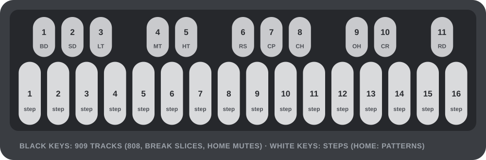
In Felucca, the SEL button is labeled SCL.
Lists
Press SEL to turn the screen you're on into a list of everything on it. You'll see every knob from its pages, grouped (on the 909, for example, BD: THIS TRACK and 909: ALL TRACKS), and then MORE, which holds the settings that are on no page. That's where the less used settings live, such as a drum track's DRIVE and DIST or the compressor's details.
In a list, turn SELECT to move and ALGORITHM to change the highlighted value. Press SEL to run a row that has a return arrow, which is an action. HOME goes back. X0X always asks before it does anything that would lose notes: press SEL for yes and HOME for no.
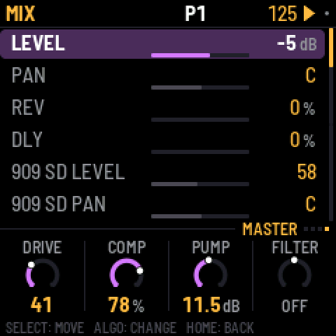
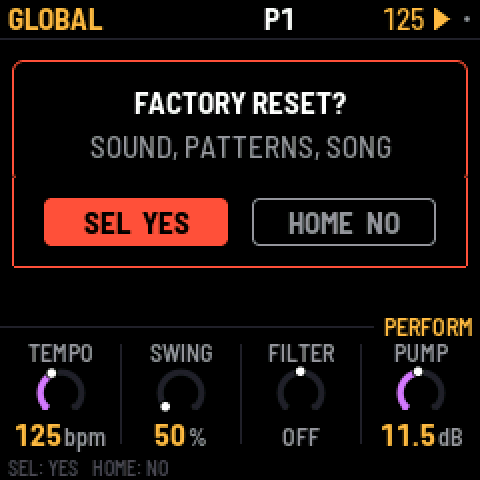
Not sure what a button does? Hold it for a second on its own, and a card tells you what it does on the screen you're on, with its combinations. Let go and nothing happens.
Undo
Hold HOME and press REC to take back your last change. The screen says what it undid, for example UNDO 909 P1. Hold HOME and press PLAY to redo it. You can go back up to 32 steps, or fewer after very big changes. A step is whatever you did before pausing for a moment: a few steps tapped in a row, one turn of a knob, or a whole recording pass. Undo covers the sounds, patterns, song and knob motion, even CLEAR PATTERN and FACTORY RESET. It doesn't cover the tempo or the settings. The history is cleared when you switch off.
What the key lights show
The key lights have two levels. Bright shows what is on or chosen, and dim shows what is there to choose.
| Screen | Bright | Dim |
|---|---|---|
| HOME | the pattern playing (a cued one blinks); the parts playing | patterns with notes; muted parts |
| SONG | the bar's pattern; the bar's parts | patterns with notes; the bar's muted parts |
| 909 / 808 | the track's hits; the track | the other tracks with hits |
| 303 | notes | ties |
| 303 with REC on | the keys you hold | the Cs, to find your place |
| BREAK | the steps it plays | the slice pads 1–8 |
| Mixer (PARTS, 909 MIX, 808 MIX) | the channel the knobs set (blinking while muted) | the other channels |
4The screen
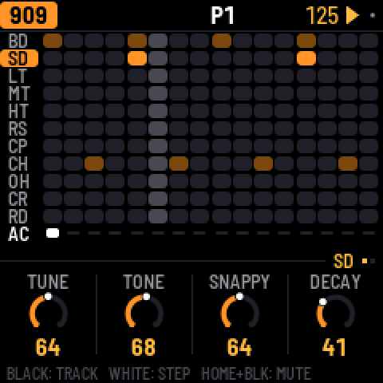
The top line shows, from left to right:
- The part, in its color (909 orange, 808 red, 303A green, 303B blue, BREAK violet). If you're not on the sound, the screen comes next: SEQ, TB-3PO, or KEYS while the 303 keyboard is on.
- The pattern playing, such as P3. P3 >5 means pattern 5 is coming up next. On a part longer than 16 steps, the steps the white keys show come after it (33-48).
- The tempo. It turns amber when X0X follows an external MIDI clock.
- A play symbol while it plays, and a red dot while you record. A small gray dot means you have unsaved changes.
When a button does something, the top line tells you what for a second, for example SAVED or P1 PASTED TO P5.
The knobs sit under a tag that says whose they are. That can be the selected track (BD), the whole machine (909 KIT), a 303's sound (303A TONE), the pattern (P3 SEQUENCE), the mixer (PARTS: 303A, 909 MIX: CP), a held 303 step on SEQ (303A STEP 5), or a p-lock (BD P-LOCK STEP 5). When a section has more than one page, the tag counts them (BD (1/2)). The dots at the end of the line stand for all the screen's pages, with the current one lit. Settings with only a few choices show a row of small squares instead of a ring.
When you turn a knob, its value shows in large type for a second, along with whose it is: a track's (BD TUNE) or a pattern's (P3 LENGTH). Settings that belong to the pattern change when the pattern does, and they're copied with it. The sound stays the same whatever pattern plays.
The footer at the very bottom tells you what the keys do on this screen (BLACK: TRACK, WHITE: STEP). Until you first press a button, it says HOLD ANY BUTTON: WHAT IT DOES.
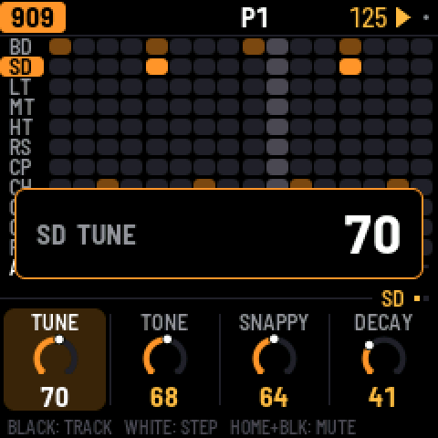
5909 and 808
Each drum machine has eleven tracks, one on each black key:
| Key | 909 | 808 |
|---|---|---|
| 1 | Bass drum (BD) | Bass drum (BD) |
| 2 | Snare (SD) | Snare (SD) |
| 3–5 | Low, mid and high tom | Low, mid and high tom, or congas |
| 6 | Rim shot (RS) | Rim shot, or claves |
| 7 | Clap (CP) | Clap, or maracas |
| 8 | Closed hat (CH) | Cowbell (CB) |
| 9 | Open hat (OH) | Cymbal (CY) |
| 10 | Crash (CR) | Open hat (OH) |
| 11 | Ride (RD) | Closed hat (CH) |
The 909's hats and cymbals are samples, as on the original machine. Every other sound on both machines is synthesized. On the 808, a track's SOUND setting switches it between tom and conga, rim and claves, or clap and maracas. On both machines, the closed hat cuts off the open hat.
Writing a beat. Press a black key to pick a track. While the pattern is stopped, you hear it too. While it plays, picking is silent so you don't add a stray hit; set GLO > KEY SOUND to ALWAYS to change that. Then press white keys. A press turns an empty step on, and a tap on a step that's on turns it off. To place accents instead, hold ENV while you press white keys. An accent makes every drum on that step louder.
A pattern can be up to 64 steps long. The white keys show 16 at a time. Press OCT+ to move to the next 16 and OCT- to go back, and the top line shows which 16 you're on.
Muting a track. Hold HOME and press its black key, and do it again to bring it back. A muted track's row turns gray. Track mutes aren't saved. Muting the whole part on HOME leaves them as they are.
The pages. EDIT shows the selected track's sound (one page, or two for the 909's kick), then KIT, where ACCENT sets how much louder accented steps are. A track's DRIVE and DIST are in SEL's list, under MORE. SEQ has the machine's LENGTH and RATE. SWING is on HOME, because it swings every part.
You'll find each track's level, pan and reverb and delay sends on the mixer. Press LFO and go to 909 MIX or 808 MIX, which shows all eleven levels at once. The black keys pick a track, and the knobs set its LEVEL, PAN, REV and DLY. On the 808, the alternate sounds share their track's pan, so the conga sits where the tom does.
6303A and 303B
There are two identical 303s, and each has its own sound and its own line.
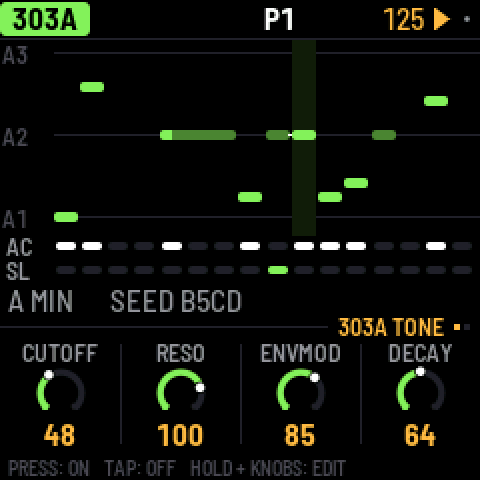
Steps. Press a white key to turn that step on, and tap it again to turn it off. To edit a step, press SEQ, hold the step's key and turn the knobs. KNOB 1 sets the note, KNOB 2 the gate (REST, NOTE or TIE), KNOB 3 the accent and KNOB 4 the slide. OCT- and OCT+ move the held note an octave. An empty step turns on as soon as you press it, so you can press, hold and set its note in one go. A slide glides from this step's note into the next one. Holding a step on EDIT gives it a sound of its own instead (see P-locks in section 11).
A tie holds the note before it through the step, so the note doesn't play again. On the screen, a tied note joins the note it holds in one long bar. Turn KNOB 1 on a tie to make it a note of its own.
Keyboard. Press REC and all 27 keys become a keyboard, and KEYS shows on the top line. The notes you play are written: step by step while the pattern is stopped, and live while it plays. OCT- and OCT+ change the octave. Play a key while you still hold another, and the 303 slides between them. Press REC again to go back to steps.
Free play. To play the 303 without writing anything, press SEQ, turn SELECT to the KEYS page and set FREE PLAY to ON. Now the keys play the 303 on every 303 screen, stopped or playing, so you can try out lines and turn EDIT's knobs as you go. The top line says FREE PLAY. Nothing is written until you press REC, which records as above. Set FREE PLAY back to OFF to get the steps back. Each 303 has its own FREE PLAY, and both are off when you switch on.
The pages. EDIT has two pages. TONE has CUTOFF, RESO, ENVMOD and DECAY, and VOICE has ACCENT, WAVE (saw or square), DRIVE and SLIDE time. TUNE, VOLUME, DRIVE TYPE (off, soft or RAT) and ACCENT DECAY are in SEL's list. SEQ has the line's LENGTH (1–64 steps), RATE, DIRECTION (forward, reverse, ping-pong or random) and TRANSPOSE. Each 303's level, pan and sends are on the mixer (LFO).
7TB-3PO
TB-3PO writes 303 lines for you. To use it, pick a 303 with ALGORITHM and press ARP.

Press OCT+ to write a completely new line, or OCT- to mutate the current one. A mutation changes about a quarter of its steps.
TB-3PO has two pages. Press ARP again, or turn SELECT, to switch between them.
- On GENERATE, DENS, ACCENT and SLIDE set how many steps play, are accented and slide. OCTS sets the range, from 1 to 3 octaves.
- On SCALE, you set the ROOT, the SCALE (minor, Phrygian, harmonic minor, minor pentatonic, Dorian or major) and the OCTAVE. MUTATE makes TB-3PO mutate the line by itself every 1–16 bars, or never.
These knobs don't change the line you're hearing. They set up the next OCT+ or OCT-, so your line stays exactly as it is, hand edits included, until you press one. When the knobs no longer match the line, the screen shows NEW LINE with a star. The same settings and seed always give the same line, and it's the same line Schwung's TB-3PO module writes.
To edit the line by hand, press SEQ. To shape its sound, press EDIT.
8Break
The break is a drum loop cut into eight slices, and X0X rearranges them as it plays.

Steps. The white keys are the bar's 16 steps. Press one to let the break play there, and tap it again to stop it.
Playing slices. Hold black keys 1–8 to play those slices yourself. Let go, and the generator takes over again. Hold key 9 to play backwards, key 10 for half speed and key 11 to stutter.
A step's own slice. Hold a white key and press black key 1–8. That step now always plays that slice of loop A, from its start, and its box shows the slice's number. To give the step back to the generator, hold it and press the same black key again. This way you can put the kick and snare where you want them and let the generator play with the rest.
The generator. Its settings are on SEQ's two pages, GROOVE and RETRIG:
- COMPLEXITY sets how often it jumps to a different slice instead of playing the next one. It's the main amount. At 0 the loop plays straight. ROLL and FILL come in with it and reach full effect at 25%, so low settings stay close to the loop.
- ANCHOR sets how strongly it keeps the kick and snare slices on beats 1 and 3.
- ROLL sets how often it repeats a slice or moves to the one next to it.
- FILL sets how much the last bar of a phrase breaks these rules.
- RETRIG 2X, 3X, 4X and 8X set the chance in each bar of stuttering a beat at that rate.
SEL's list has three more. PHRASE sets the length of a phrase (2, 4, 8 or 16 bars, or off). A LENGTH and B LENGTH set how often a new slice is chosen, from every 1/4 bar to every 8 bars.
The loops. EDIT has LOOP A, LOOP B, B CHANCE and PITCH. B CHANCE is the chance of switching to loop B in the last bar of a phrase, or in any bar with PHRASE off. Press EDIT again for FILTER and LEVEL. FILTER is one knob: it's OFF in the middle, turn it left for a low-pass and right for a high-pass. A high-pass keeps a loop's hats and lets the 909 or 808 play the kick and snare. Loops follow the tempo by playing faster or slower, so their pitch follows it too, as on a sampler. PITCH shifts it on top of that. X0X comes with two loops of its own, 909 GR and 909 FL, played by its 909. Loops you upload come after them.
The steps, slices and loops are all saved with the pattern. The break's level, pan and sends are on the mixer's PARTS page (LFO, black key 5).
Your own breaks
To load your own loops, open the break loops page in Chrome or Edge with your FM-1 connected. They appear after X0X's own loops as BR1, BR2 and so on. There's room for about 21 seconds in all, which is around nine one-bar loops.
From the command line
With the FM-1 connected, run:
python3 tools/upload_breaks.py --bars amen.wav think.wav funky.wav ...--bars keeps one bar of each file. Without it, each file is sent whole. Uploading replaces all your loops. --dry-run FOLDER shows what would fit, without the FM-1. If you have schwung-breakbeat next to X0X, --bbgen sends BB Gen's classic breaks. To build loops into the firmware itself, see BUILDING.md.
9Patterns
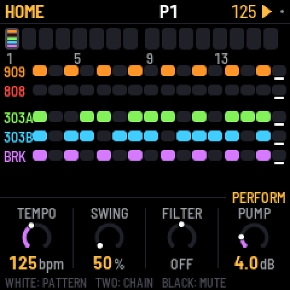
There are 32 patterns. A pattern holds each part's steps, length and rate, the break's settings, the swing, and any knob motion, p-locks and probabilities. Sounds, effects and master settings aren't part of a pattern, so they don't change when the pattern does.
Each part plays its own pattern, so the 303s can play pattern 3 while the drums play pattern 7.
HOME shows patterns 1–16 as boxes, one per white key. Press OCT+ to see 17–32 (P17-32 appears under the boxes), and OCT- to go back. Every fourth box is numbered. Each box has a line for each part with notes in that pattern. The line is bright where that part is playing the pattern now, and dim otherwise.
Choosing patterns
- To change all five parts, press a white key on HOME or turn PRESETS. From any other screen, hold HOME and press a white key.
- To change one part, turn PRESETS on that part's screen (SEQ, EDIT, TB-3PO).
- To play a chain, hold two white keys at once on HOME. All five parts play each pattern from the first to the second, a bar each, then start again. Choosing a single pattern ends the chain.
While it plays, the new pattern starts when the current bar ends. When it's stopped, the new pattern takes over at once. A part that changes pattern starts again from step 1, and the others carry on.
Copy and paste. Hold SAVE, and the top line says P1 COPIED. Press a white key to paste onto that pattern (P1 PASTED TO P2). This pastes all five parts, as they're playing now. If the pattern you paste onto has notes, X0X asks first. While you hold SAVE, OCT- and OCT+ switch between patterns 1–16 and 17–32.
Clearing. Hold SAVE and press REC to clear the selected part in its pattern. To clear all five, use GLO > CLEAR PATTERN.
Muting. On HOME, black keys 1–5 mute and unmute the parts. Mutes aren't saved, except inside a song.
Lengths and swing. Parts can have different lengths, so they drift against each other. The 909's length sets the length of a bar. The 909's pattern also holds the swing, which applies to every part. Swing delays every second 16th note: 50% is straight, and 75% is the most.
HOME's knobs are for playing live: TEMPO, SWING, and the master's FILTER and PUMP.
Tap tempo. Hold HOME and tap SEQ in time with the beat. This works from any screen, playing or stopped. From the third tap in a row, it sets the tempo, and if you keep tapping it follows your last four taps. One or two taps change nothing, so a stray press does no harm. Pause for two seconds and it starts over. While it plays, from the third tap on, each tap also puts the beat on your tap: every part jumps to the nearest quarter note and plays on from there. A tap a little late goes back to the beat just passed, and a tap a little early skips ahead to the coming one. Just before the bar line, the bar ends on your tap, which brings in the next pattern or the song's next bar. The TEMPO readout shows the result. While X0X follows an external MIDI clock, the clock sets the tempo and tapping does nothing.
10Recording
Press REC to turn recording on, and press it again to turn it off.
- To record drums, press black keys while the pattern plays. With REC on, you always hear them. Hold ENV for accented hits.
- To record a 303 live, play its keys while the pattern runs. With REC on, they're a keyboard.
- To record a 303 step by step, turn REC on while the pattern is stopped. Each key you press fills the next step, from step 1. Hold ENV while you press a key for an accent, or LFO for a slide. For a rest, hold ENV and press OCT- or OCT+. For a tie, hold LFO and press OCT- or OCT+.
- To record knob moves, turn REC on, play the pattern and turn any sound knob (section 11).
- To record the song, turn on REC on the SONG screen and press PLAY (section 12).
11Knob motion, p-locks and probability
All three give steps values of their own, and all three are saved with the pattern.
Knob motion
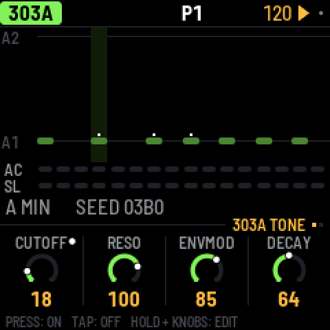
Turn on REC, press PLAY and turn any sound knob. X0X records the knob on the steps where you moved it and fills in short pauses, so a slow sweep has no gaps. On playback, it glides from step to step.
- A knob with motion has a dot in its corner, and its ring follows the recording as it plays.
- On steps you didn't touch, the knob's own setting plays.
- If you turn the knob without REC, you take over for one pass of the pattern, and then the recording plays again.
- To clear a knob's motion, hold SAVE and turn the knob.
- Motion belongs to a part's pattern. The 303's knobs record into the 303's pattern, and the effects and master into the 909's. Copying or clearing a pattern copies or clears its motion too.
- When you stop, every knob goes back to its own setting.
P-locks
A step can have a sound of its own, such as a higher tune on one kick, an open filter on one 303 note, or the break pitched up for one step.
- On EDIT, hold a step that's on and turn a sound knob. That step plays the new value, and the others keep the knob's. While you hold the step, the knob row says P-LOCK STEP 5, the knobs show the step's values, and an amber dot marks the locked ones. When it's stopped, you hear the lock while you hold the step.
- A tap still turns a step on or off. Only a hold with a knob turn makes a lock. An empty step turns on as soon as you press it, so you can press, hold and lock in one go.
- To clear one lock, hold the step, hold SAVE and turn the knob.
- On SEQ, holding a step locks nothing. On a 303, the knobs set the step's note instead.
Probability
Hold a step (on SEQ or EDIT) and turn SELECT to set the chance it plays, from 100% down to 5% in steps of 5. The top line shows it (STEP 5: 50%). The dice are rolled every time the step comes round, so at 50% it plays about every other pass.
Keep turning past 5% for cycles: 1:2, 2:2, 1:3 and so on up to 8:8. A step at 1:4 plays on the first of every four times round its part's pattern, and 2:4 on the second. There's nothing random about it. Each part counts its own passes, and starts from 1 again whenever you press PLAY or it changes pattern.
- On the 909 and 808, the chance belongs to the selected track's step, so the kick and the hats on one step can each have their own.
- On a 303, a skipped step is a rest. On the break, a skipped step doesn't fire.
- A skipped drum hit sends no MIDI note.
Good to know
- Steps with p-locks or a chance below 100% have a small notch on the step grid.
- P-locks and probabilities are stored like recorded motion, as one "knob" per locked setting in each part's pattern. There's room for 160 across all patterns. When it's full, the top line says MOTION FULL.
- Two locked steps next to each other glide from one value to the other, like a recording.
12Song
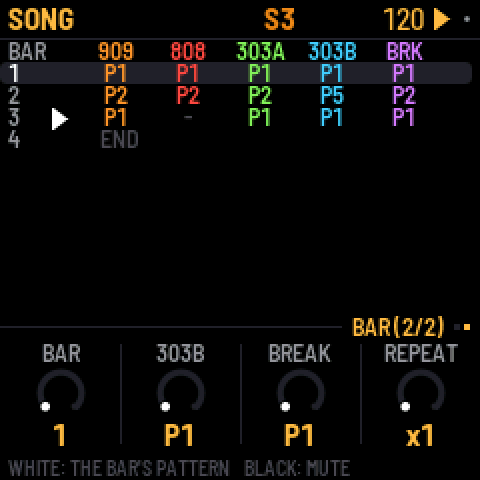
A song is a list of up to 192 bars. Each bar says which pattern each part plays and which parts are muted. To open the song, press HOME twice. Press HOME again to come back to the pattern.
- To write bars, press a white key. The selected bar gets that pattern for all five parts, and the next bar is selected. Press keys at the end of the song to add new bars.
- To edit a bar, turn KNOB 1 to select it, then use the other knobs to set each part's pattern for that bar.
- To mute parts in a bar, press black keys 1–5.
- To repeat a bar, turn SELECT to the SONG screen's second page. REPEAT plays the selected bar up to 8 times, and x2 … x8 shows at the end of its row, so four bars of the same pattern take one row.
- To play the song, press PLAY on the SONG screen. The song starts at the selected bar and loops. It keeps playing wherever you go (HOME for mutes, EDIT for sounds) until you stop it. While it plays, the top line shows S and the current bar number. PLAY on any other screen plays the patterns. The screen you start from decides, and the top line says which (S or P).
- To record the song, turn on REC on the SONG screen and press PLAY. As it plays, change patterns and mute parts however you like. Each bar is written into the song as it goes by, starting from the bar you started on, and the song grows if you play past its end. Recording replaces what was in those bars before.
Press SEL on the SONG screen for LENGTH, INSERT BAR, DELETE BAR and CLEAR SONG.
13Effects
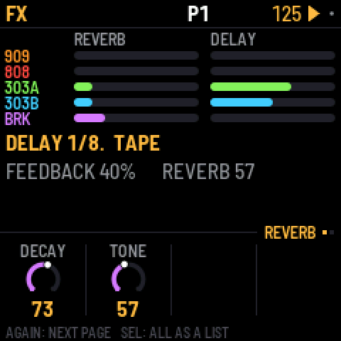
There is one reverb and one delay, and every part can send to both. Each part's sends are on the mixer's PARTS page (LFO), and each drum track's are on 909 MIX and 808 MIX. FX shows how much every part sends, and it has two pages:
- REVERB has DECAY and TONE. It's a smooth stereo reverb, so whatever you send it comes back wide.
- DELAY has TIME (in note values from 1/32 to a dotted half note), FEEDBACK, TONE and TAPE. With TAPE at the far left (DIGI), it's a clean 12-bit digital delay. Turn TAPE up and it becomes a tape delay that wobbles, saturates and wears more the further you turn it. At high feedback it can feed back on itself.
SEL's list has more under MORE: each effect's low cut and return level, and PING WIDTH. PING WIDTH bounces the echoes between left and right. At 0 it's off, at 127 the echoes go hard left and right, and in between they sit closer together. A new project starts at 20, a narrow bounce.
14Mix and master
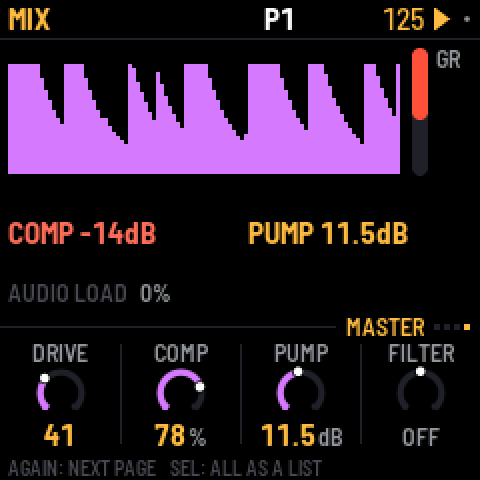
Press LFO to open the mixer, and press it again (or turn SELECT) for its four pages. The red bar on the right shows the compressor's gain reduction.
- On PARTS, each part has a level and a meter. Press black keys 1-5 to pick the 909, 808, 303A, 303B or the break, and the knobs set its LEVEL, PAN, REV and DLY.
- 909 MIX and 808 MIX are each drum machine's own mixer, with every track's level at a glance. The black keys pick a track, and the knobs set its LEVEL, PAN, REV and DLY.
- On MASTER, four knobs work on the whole mix. The screen shows the output level over the last couple of seconds, so you can see the pump and the compressor working.
On PARTS, 909 MIX and 808 MIX, hold HOME and press a black key to mute or unmute that channel. That's a part on PARTS, and a track on the drum pages. The key lights show it: the channel the knobs set is bright (blinking while muted), the others are dim, and muted ones are dark.
Turn ALGORITHM on the mixer to go to that part's page: 909 MIX or 808 MIX for the drum machines, and PARTS (with the part picked) for the 303s and the break.
| MASTER | What it does |
|---|---|
| DRIVE | Saturates the whole mix, with the 909's drive stage. |
| COMP | Sets the compressor with one knob. At 0 it's off. Turning it up lowers its threshold, raises its ratio and adds makeup gain, all together. Three quarters is the factory's hard squeeze (4:1 from -24 dB, +16 dB). |
| PUMP | Lowers the whole mix each time the kick plays, by up to 24 dB, and lets it swell back up for that big-beat breathing. Accented kicks pump harder. It works even with COMP at 0, and even when the kick is muted, so a silent kick can drive it. To choose which kick, use PUMP BY in SEL's list (the 909's, the 808's or both). |
| FILTER | One knob. It's off in the middle. Turn it left to close a low-pass, or right to open a high-pass. |
FILTER and PUMP are also on HOME's PERFORM page, for playing live.
The factory mix is set up for big beat. The break is up front with the 909 kick under it, the 303s go through RAT distortion into a tape delay, and the clap has reverb. For a clean mix, set COMP and PUMP to 0.
The master in detail
In SEL's list, under MORE, you'll find the compressor's THRESH (-48 to 0 dB), RATIO (1:1 to 20:1 and INF), ATTACK (0.1 to 100 ms), RELEASE (10 to 1500 ms), MAKEUP (0 to 24 dB) and MIX (dry to fully compressed, for parallel compression). There's also PUMP BY (the 909's kick, the 808's, or both), the filter's RESO, and LIMIT, which prevents clipping (leave it on). Last come the drive stage's DIST type, its GLUE compressor and VOLUME. Turning COMP or FILTER sets their details again.
15Settings and saving
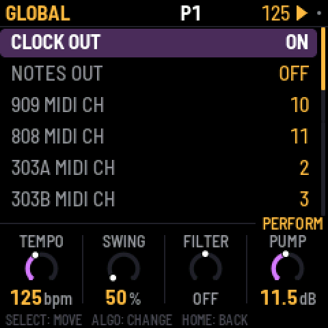
Press GLO for these settings, in five sections (MIDI, AUDIO, KEYS AND SCREEN, PROJECT, SYSTEM):
| Setting | What it does |
|---|---|
| CLOCK OUT | Sends MIDI clock and start/stop messages. |
| NOTES OUT | Sends the patterns out as MIDI notes. |
| 909 … BREAK MIDI CH | Sets each part's MIDI channel, for notes and CCs in and out. Choose 1–16, or OFF to ignore incoming notes and CCs for that part (and send none). |
| CC OUT | At OFF (the default), X0X sends no CCs. At KNOBS, the knobs you turn go out as CCs. At ALL, what knob motion and p-locks play goes out too. For details, see section 16. |
| MIX MIDI CH | Sets the channel for the mixer's levels, the effects and the master: 1 (the default) to 16, or OFF. |
| OUTPUT | NORMAL, or LOUD, which gives 6 dB more at the headphones and line out (and USB audio), for headphones that need it. The master's LIMIT (on by default) keeps it from clipping. |
| USB AUDIO | At FOLLOWS KNOB (the default), USB audio is as loud as the FM-1, MASTER knob and all. At FULL, USB audio stays at full level whatever the knob says, so you can record over the cable with the speaker turned down. |
| LIGHTS | At ON, the key lights show the steps, and the unlit buttons glow dimly so you can read them. At KEYS, you get the key lights only. At OFF, neither. |
| KEY SOUND | At STOPPED (the default), picking a drum or editing a 303 step is silent while the pattern plays, unless REC is on. At ALWAYS, you always hear it. The 303 keyboard always plays either way. |
| THEME | Sets the screen's color: green, amber, cyan, red or mono. |
| SAVE PROJECT | Saves everything. |
| AUTOSAVE | At ON (the default), changes are saved by themselves while the pattern is stopped, once nothing has been touched for four seconds. At OFF, only SAVE saves. |
| CLEAR PATTERN | Clears all five parts of the current pattern. |
| FACTORY RESET | Goes back to the factory sounds and empty patterns, with no song and no knob motion. Your saved project is kept until you save over it. |
| PERFORMANCE | Opens the performance page (below). |
| 2ND CORE | At ON (the default), X0X uses both of the FM-1's processor cores. At OFF, it uses one. The change takes effect the next time you switch on. X0X sets it to OFF by itself if it crashes with two cores (see the performance page, below). |
| ABOUT X0X | Shows the version, how full the memory for patterns is (MEM), and the audio load. |
| BATTERY | Shows the battery's charge: FULL, 2/3, 1/3 or EMPTY, or USB POWER while a computer powers the FM-1. You can't change it. |
Saving
SAVE saves the sounds, all 32 patterns, the song, the knob motion, the tempo and the settings. A small gray dot at the top right of the screen means you have unsaved changes. Anything unsaved is lost when you switch off.
With AUTOSAVE on (the default), you'll rarely need SAVE. Whenever the pattern is stopped and nothing has been touched for four seconds, X0X saves and says AUTOSAVED.
X0X never saves while playing. Saving pauses the sound for a moment, because the FM-1 plays from the same memory it saves to. So if you press SAVE while it plays, it says SAVES WHEN STOPPED and saves when you stop.
How much fits
X0X packs the patterns, the song and the knob motion to fit them in the FM-1's memory. Empty steps take almost no room, so a typical project uses a small part of it. To see how much, go to GLO > ABOUT X0X and read MEM. If a project ever grows too big to fit, X0X says MEMORY FULL: NOT SAVED and keeps what was saved before. Clear patterns you don't need to make room. Projects saved by earlier versions load as they were, with their steps on 1–32 and their patterns on 1–16.
Performance: how hard the FM-1 is working
GLO > PERFORMANCE shows how hard the FM-1 is working, updated every second. You'll see the audio load and its peak, any dropouts, and how much of the processor each part is using.
For a proper measurement, press SEL and choose RUN PERF TEST. X0X plays three patterns of its own for about 15 seconds, from a simple loop up to everything as busy as it gets. Then it puts your project back exactly as it was and shows the results. Press HOME or PLAY to stop the test early.
X0X uses both of the FM-1's processor cores. The 808 and the break run on the second core, so the 808's share on the performance page is the time the first core waits for them. The whole load is lower too. On one FM-1, the test's three patterns went from 43%, 83% and 115% on one core to 39%, 54% and 68%, and the busiest moment of the worst case went from over the limit to 84%.
The top right of the performance page says 2 CORES. On some FM-1s the second core reads its work wrongly. X0X notices the first time and carries on with one core, and the page says 1 CORE: BAD READS in red. Everything still works, but the busiest patterns may drop out.
If X0X crashes while both cores are running, it restarts with one core and sets GLO > 2ND CORE to OFF, so it doesn't crash again. The page then says 1 CORE (GLO). To try two cores again, set 2ND CORE to ON and switch the FM-1 off and on. After a crash while starting, X0X also starts on one core, once.
Under the cores, the page shows the voltages X0X runs the processor's two supplies at: 1.38 / 1.60V, the same as M-VAVE's own firmware. The FM-1's boot loader starts them lower, at 1.26 / 1.40V. At those voltages, some FM-1s misread their memory when both cores are busy.
When the FM-1 gets close to its limit, X0X lightens the load by itself instead of dropping out. The 303s stop oversampling, so bright, resonant notes get a touch grittier, and the 808's sounds end a little sooner as they fade. While this is happening, GUARD lights up in amber next to the audio load, and it switches off again after three quiet seconds. The performance page counts how often it has kicked in (GUARD 3x).
If X0X drops out on one of your patterns, a photo of the test results and of the pattern is the most useful thing you can send.
If X0X crashes, it shows a red screen for a few seconds and starts again. Until you switch the FM-1 off, the performance page keeps that crash's numbers in red at the bottom (CRASH PC … RA …, EMU … DBG …). A photo of them is the most useful thing to send with a crash report.
Use KNOB 1 to turn on some extra counters (STALLS). They're experimental, so if the FM-1 acts up with them on, switch it off and on again.
Back up your project
X0X keeps one project. To keep more, or to keep yours while you try other firmware, save it to a file on your computer and load it back later. Open the backup page in Chrome or Edge, with your FM-1 connected by USB.
To back up, press Back up. The project goes to an .x0b file in your downloads, with the sounds, all 32 patterns, the song, the knob motion, the tempo and the settings. X0X can keep playing, but changes it hasn't saved yet only go in the file when it's stopped.
To restore, stop X0X, choose a backup and press Restore. X0X checks the whole file before anything changes. Then its screen asks RESTORE FROM USB? Press SEL to restore, or HOME to keep what you have. The backup replaces the project on the FM-1, and X0X loads it at once.
A backup doesn't hold your break loops. Keep their WAV files, and load them again on the break loops page. A backup made with an earlier version of X0X restores in a later one.
From the command line
With the FM-1 connected, run:
python3 tools/x0x_backup.py backup my-song.x0b
python3 tools/x0x_backup.py restore my-song.x0bpython3 tools/x0x_backup.py info my-song.x0b shows what a backup holds. The files are the same as the ones the backup page makes.
16MIDI and USB audio
When you connect it over USB, the FM-1 shows up as a MIDI device called "X0X FM-1".
X0X takes MIDI from USB and from the FM-1's TRS MIDI IN jack, and treats both the same way. Each part listens on its own channel. These are the defaults:
| Input | What it plays |
|---|---|
| Channel 10 | The 909, with General MIDI drum notes: 36 kick, 38 snare, 41, 45 and 50 toms, 37 rim, 39 clap, 42 closed hat, 46 open hat, 49 crash, 51 ride. |
| Channel 11 | The 808, with the same notes, plus 56 for the cowbell and 49 for the cymbal. |
| Channel 2 | 303A. Overlapping notes slide, and a velocity of 100 or more plays an accent. |
| Channel 3 | 303B, in the same way. |
| Channel 4 | Notes 36–43 play break slices 1–8. |
| Clock | X0X follows an incoming MIDI clock automatically, and goes back to its own tempo half a second after the clock stops. Start, Stop and Continue start and stop the patterns. |
Use GLO to set each part's channel (909 MIDI CH and so on), or OFF to ignore its notes. That's useful when another box sends you its clock with notes on the same channels. X0X can also send MIDI. It sends clock and start/stop when CLOCK OUT is on, and the patterns as notes on each part's channel when NOTES OUT is on.
While X0X follows an external clock, the tempo on the top line is averaged over about a second, so it doesn't flicker with every clock.
MIDI CC
A controller can turn X0X's knobs with MIDI CCs. Each part takes its CCs on its own channel, the same one as its notes. MIX MIDI CH (channel 1 by default) takes the mixer, the effects and the master. A CC sets its knob just as turning it would, whatever page is showing. If REC is on while it plays, the CC records knob motion. Otherwise it sets the knob, and if the knob has motion in the pattern, the CC wins over it for one pass. A sweep of CCs is one undo step. The map is fixed, with no MIDI learn. Its first banks match CTL-1's, so CTL-1 plays these knobs as it comes.
On a part's channel (909 on 10, 808 on 11, 303A on 2, 303B on 3, the break on 4):
| CC | 303A and 303B | 909 and 808 | Break |
|---|---|---|---|
| 7, 10, 91, 93 | The part's level, pan, reverb send and delay send | The same | The same |
| 16–19 | CUTOFF, RESO, ENVMOD, DECAY | 16 FILTER, 17 LEVEL, 18 PITCH | |
| 20–23 | ACCENT, WAVE, DRIVE, SLIDE | 20–30: TUNE of tracks 1–11 | |
| 24–27 | TUNE, VOLUME, DRVTYP, ACCDEC | ||
| 74, 71, 75 | CUTOFF, RESO, DECAY again (taken in, never sent) | 74: FILTER again | |
| 70–80 | DECAY of tracks 1–11 | ||
| 102–112 | LEVEL of tracks 1–11 | ||
| 12 | The kit's ACCENT |
The drum tracks count in screen order. On the 909 that's BD, SD, LT, MT, HT, RS, CP, CH, OH, CR, RD, and on the 808 BD, SD, LT, MT, HT, RS, CP, CB, CY, OH, CH. The 909 clap's DECAY is its TAIL. The 909 rimshot has no DECAY, so CC 75 does nothing on channel 10.
On MIX MIDI CH:
| CC | What it sets |
|---|---|
| 16–19 | The MASTER page: DRIVE, COMP, PUMP, FILTER (64 is off) |
| 74, 71 | The master's FILTER again, and its RESO |
| 20, 21 | The reverb's DECAY and TONE |
| 22–25 | The delay's TIME, FEEDBACK, TONE and TAPE |
| 102–106 | The level of the 909, 808, 303A, 303B and break |
A switch such as WAVE flips at 64. CC 120 (all sound off) and CC 123 (all notes off) on a part's channel let go of the notes that MIDI holds there.
X0X sends CCs when CC OUT (GLO) is on. With KNOBS, it sends a knob's CC each time you change it by hand, whether with a knob, a row in a SEL list, or ENV and a knob. A CC that came in is never sent back, so a DAW that echoes MIDI doesn't loop. A part's level goes out twice, as CC 7 on the part's channel and as 102–106 on MIX MIDI CH. ALL also sends what knob motion and p-locks play, so X0X's lanes can drive other synths. The lanes send at most 4 CCs every 6 ms, and only while there is room left for the notes, so a busy pattern never loses a note to its CCs. In ALL, a CC that comes back with the value a lane just sent is ignored.
When a project loads, and after an undo or a redo, X0X sends every knob on the map once, so a controller with LED rings shows the values as they are.
USB audio
Over the same USB cable, the FM-1 also shows up on your computer as an audio input called "X0X FM-1". It has two channels at 44.1 kHz, and there's no driver to install. It carries what the headphones hear, after VOLUME, in stereo.
Record it in any audio app, or monitor it live through one. The FM-1 keeps its USB audio in step with the computer's clock, so live monitoring doesn't drift or drop out. The first moment after an app opens the input can click while the FM-1 settles.
Screen reader
X0X can tell a screen reader what its screen shows. Connect your FM-1 by USB, open the FM-1 Screen Reader in Chrome or Edge, and click Connect. It reads out the page you're on and its knobs, and a knob's value as you turn it. It also reads list rows with their place ("clock out on, 1 of 22"), help cards, questions, steps you turn on or off, play and stop, and every message. It reads them in words: "bass drum tune 37", not "BD TUNE 37".
The page can speak with its own voice, at the speed and pitch you choose, or pass everything to your own screen reader (VoiceOver, NVDA, JAWS, TalkBack). Press W to hear the whole screen again. The FM-1 says nothing until the page connects, so a DAW on the same cable never sees it.
17Troubleshooting
To put the FM-1 in update mode, hold OCT- and OCT+ together for five seconds. A countdown appears. Let go before it ends to cancel.
If a button or knob does the wrong thing, calibrate the FM-1. Hold OCT- and OCT+ while you switch it on, and the screen asks you to press each button and turn each knob in turn.
If X0X crashes, it shows a red CRASH screen and restarts by itself a few seconds later. The next start shows RESTARTED AFTER A CRASH and an address (PC ...) for a moment. If you report the problem, include that address and what you were doing.
If X0X crashes twice in a row while starting, it starts in SAFE MODE instead. There's no sound, but USB works, so the web installer can reach it. Reinstall X0X, or put the stock firmware back from the same page. Press PLAY to try starting X0X normally again. If even safe mode fails twice, the FM-1 drops into the chip's own update mode, and only the rescue below can reach it.
Stuck on the start screen after changing BRIGHTNESS (0.9-beta and earlier)
Versions up to 0.9-beta had a brightness setting that could freeze the FM-1. Because the setting was saved, it stayed frozen at every start, even after reinstalling. Install 0.10-beta or later from the web installer. The setting is gone, the saved value is ignored, and the FM-1 starts normally.
Recovering an FM-1 that won't start
Since 0.5-beta, an FM-1 that keeps crashing starts in safe mode (above), where the web installer can fix it. Older versions instead dropped into the chip's own update mode after two crashes. 0.2-beta did this: you'd see the X0X screen, a red X0X CRASH screen, then a blank screen. An install cut short, by a pulled cable or a sleeping computer, can leave it there too, with a blank screen and only the red charging light. Neither the web installer nor M-VAVE's updater can see an FM-1 in that state. On a Mac, though, a script can put M-VAVE's firmware back, with the USB cable you already have.
The same script helps if X0X 1.2.0 is on one of the newer FM-1s (sold since autumn 2026, with the UC25HQ80 flash chip). X0X starts, but it can't save, and no installer can reach it. M-VAVE's updater can't either. Use the script, then install X0X 1.2.1 or later, which works on these FM-1s.
Open Terminal, paste this line and press Return:
bash -c "$(curl -fsSL https://raw.githubusercontent.com/charlesvestal/fm1-x0x/main/tools/fm1_rescue.sh)"- If a window asks you to install the command line developer tools, click Install. When it has finished, paste the line again.
- If it asks for a password, type your Mac password (nothing shows as you type) and press Return.
- When it says it's waiting, plug the FM-1 in and switch it on. It crashes and goes blank, and the script catches it. If X0X starts normally instead, hold OCT- and OCT+ until the countdown ends and the screen goes black. The script checks the chip, saves a backup of the FM-1's memory in the
fm1-rescuefolder in your home folder, and asks before it writes anything. - Type yes and press Return. Don't unplug anything until it says it's restarting the FM-1. The FM-1 then starts into its original firmware, and you can install X0X again from there.
The script downloads M-VAVE's FM-1 firmware (V16, and V15 from the Internet Archive) and JieLi's flash loader, and checks them against known fingerprints. It puts back the version whose bootloader the FM-1 already has. To go from V15 to V16 after that, use M-VAVE's M-UPGRADE. The script writes only the firmware area of the memory, never the bootloader or the FM-1's own settings, and it checks everything it writes. Running it again is always safe. If it fails, copy everything in the Terminal window and open an issue. If the FM-1 never shows up at all, Felucca's FM-1-transporter can still reach it. It's a small RP2040 board wired to the USB lines.
18Parameters
Drum settings range from 0 to 127. DIST sets the distortion type: DIODE, CLIP, SAT, BFZ, PDIST, FOLD or CRUSH. PAN goes from L64 through C (the middle) to R63.
Each track's Level, Pan, Rev and Dly are on the mixer (909 MIX, 808 MIX), and its Drive and Dist are in SEL's list. The rest are on its sound pages.
909 tracks
| 909 track | Settings |
|---|---|
| BD | Tune, Attack, Decay, Level, Pitch depth, Pitch, Drive, Dist, Rev, Dly, Pan |
| SD | Tune, Tone, Snappy, Decay, Level, Drive, Dist, Rev, Dly, Pan |
| LT, MT, HT | Tune, Decay, Level, Attack, Drive, Dist, Rev, Dly, Pan |
| RS | Level, Tune, Drive, Dist, Rev, Dly, Pan |
| CP | Level, Tune, Tail, Drive, Dist, Rev, Dly, Pan |
| CH, OH | Decay, Level, Tune, Drive, Dist, Rev, Dly, Pan |
| CR, RD | Tune, Level, Decay, Drive, Dist, Rev, Dly, Pan |
| KIT | Accent (how much louder accented steps are) |
808 tracks
| 808 track | Settings |
|---|---|
| BD | Level, Tone, Decay, Tune, Attack, Drive, Dist, Rev, Dly, Pan |
| SD | Level, Tone, Snappy, Tune, Decay, Drive, Dist, Rev, Dly, Pan |
| LT, MT, HT | Level, Tune, Decay, Sound, Drive, Dist, Rev, Dly, Pan |
| RS | Level, Tune, Decay, Sound, Drive, Dist, Rev, Dly, Pan |
| CP | Level, Tune, Decay, Attack, Sound, Drive, Dist, Rev, Dly, Pan |
| CB, CH | Level, Tune, Decay, Drive, Dist, Rev, Dly, Pan |
| CY, OH | Level, Decay, Tune, Drive, Dist, Rev, Dly, Pan |
| KIT | Accent |
303
| 303 setting | Range |
|---|---|
| Cutoff, Reso, EnvMod | 0–127 |
| Decay | 200–2000 ms |
| Accent | 0–127 |
| Wave | Saw or square |
| Tune | A from 400 to 480 Hz; the middle is 440 Hz |
| Volume | 0–127 |
| Drive, Drive type | Off, soft or RAT |
| Slide | 2–360 ms |
| Accent decay | 30–3000 ms |
Break
| Break setting | Range |
|---|---|
| Complexity, Anchor, Roll, Fill | 0–100 |
| Retrig 2x, 3x, 4x, 8x | 0–100 |
| Phrase | Off, 2, 4, 8 or 16 bars |
| B chance | 0–100 |
| A length, B length | 1/4, 1/2, 1, 2, 4 or 8 bars |
| Level | 0–127 |
| Pitch | -12 to +12 semitones |
| Filter | LP 100%–1%, OFF, HP 1%–100% |
Effects and master
| Effect page | Settings |
|---|---|
| REVERB | Decay, Tone; in the list: low cut, return level |
| DELAY | Time (1/32, 1/16T, 1/16, 1/8T, 1/16., 1/8, 1/4T, 1/8., 1/4, 1/2T, 1/4., 1/2, 1/2.), Feedback, Tone, Tape (DIGI, then tape and its wear); in the list: low cut, return level, ping width (0 = off) |
| MASTER | Drive, Comp, Pump, Filter; in the list: the compressor's details, pump by, resonance, limiter, the drive's type, glue and volume |
The delay follows the tempo, including an external MIDI clock. A delay longer than two seconds (1/2. below 90 BPM, 1/2 below 60) plays at half that length, which still lands on the beat. With PING WIDTH above 0, the echoes bounce from left to right, one delay time apart. Delays longer than one second play in the middle instead.
19Credits
X0X is free software under the GNU General Public License, version 3. If you share the firmware, you must also share its source code.
- The platform (hardware layer, USB, update loader, installer and storage) comes from Felucca by Leo Kuroshita, Hügelton Instruments.
- The 909 comes from 9W9 by athousanddetails, which is based on ER-99 by Matthew Cieplak. Its hat and cymbal samples are ER-99's.
- The 808 comes from 8W8 by athousanddetails.
- The reverb is by luchak.
- The 303 comes from schwung-303, built on Open303 by Robin Schmidt (MIT license), with extensions based on jc303 and dm-Rat.
- TB-3PO comes from schwung-tb3po, which is a port from the Phazerville Hemisphere Suite.
- The break generator comes from BB Gen by mestela, used with permission.
- The fonts are Barlow Semi Condensed and Terminus (SIL Open Font License).
M-VAVE and FM-1 are trademarks of their owners, and TR-808, TR-909 and TB-303 are Roland trademarks. X0X is not affiliated with M-VAVE, Roland or Hügelton Instruments.